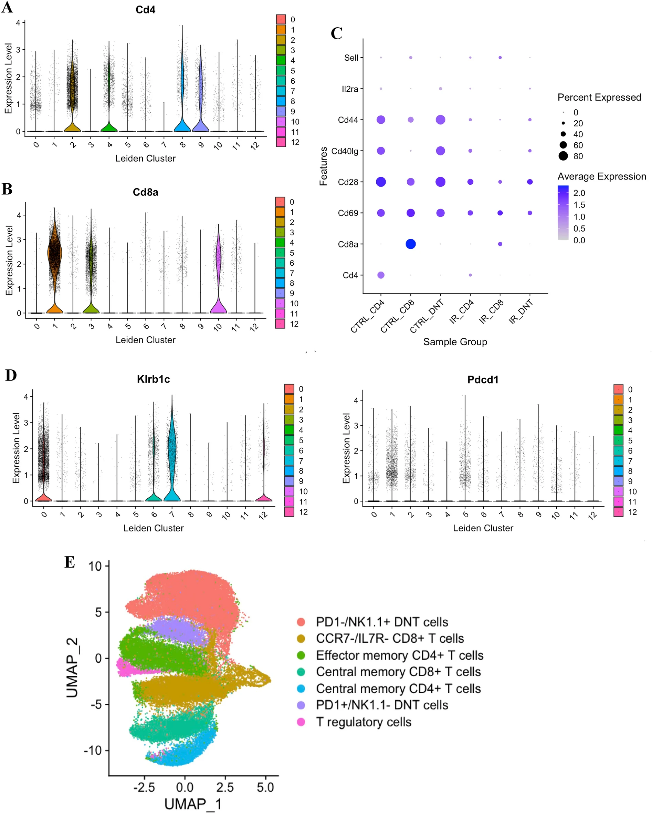

Single cell and spatial transcriptomics analysis of kidney double negative T lymphocytes in normal and ischemic mouse kidneys
Gharaie et al., scientific reports(2023)
- Ischemia reperfusion (IR) injury and nephrotoxins are major causes of AKI.
- White blood cells including neutrophils, dendritic cells, macrophages, B and T cells have been shown to mediate AKI.
- T cell 중에서도 CD4+, CD25+, FOXP3 Tregs
- However, renal double negative (DN) T cells는 CD4+ and CD8+ cell markers를 발현시키지 않는 unique subset of T cell receptor (TCR) αβ T lymphocytes이다
- We also explored expression of our genes of interest in the NIH human kidney precision medicine project (KPMP) database
T cells
1. T Cell Markers:
• CD45+ CD2+ CD3+: General markers for T cells.
• CD3: T cell marker.
• CD2: T cell and Natural Killer (NK) cell marker.
• Trac and Trbc1: α/ß-TCR marker genes, indicating TCRαβ+ T cells.
• Trdc, Trdv1, Trgv2, Trgj2: δγ-TCR marker genes, indicating δγ-TCR+ T cells.
2. Activation and Memory Markers:
• CD69: Early activation marker.
• CD28: Co-stimulatory molecule important for T cell activation.
• CD44: Marker associated with activated/memory T cells.
• CD25 (IL2RA): High-affinity receptor for IL-2, expressed in activated T cells.
• CD62L (SELL): L-selectin, low expression in effector/memory T cells.
3. NK1.1+ and PD-1+ T Cells(주요 신장 이중음성(DN, double-negative) T 세포):
• Klrb1c: NK1.1 marker, highly expressed in clusters 0, 6, 7, and 12.
• Pdcd1: PD-1 marker, expressed in clusters 1 and 5.
4. NKT Cell Markers:
• CD3: Also expressed in NKT cells.
• Ncam1: Neural cell adhesion molecule, sometimes used for NK and NKT cells.
• Klrb1b and Klrb1c: NKT markers.
• CD24: Marker for NKT cells.
• CD44: Memory/effector marker, also used for NKT cells.
